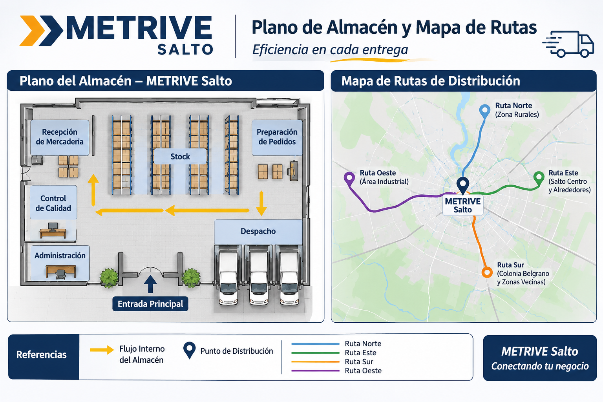

Informe Diario de Recepción - Planta Metrive Salto
Resumen del Turno Mañana
El ingreso de camiones se desarrolló entre las 06:00 y las 10:00 hs en el predio de Salto. Las cargas recibidas se encuentran en óptimas condiciones de almacenamiento.
- Perfiles y Chapas Metálicas
- Insumos Siderúrgicos
- Componentes de Estructuras
- Repuestos Industriales
- Verificación física de precintos y documentación de origen en báscula.
- Control cuantitativo y cualitativo de la carga descargada en playa.
- Registro de ingreso de stock en el sistema WMS de Metrive.
Ubicación y Enlaces Útiles - Metrive

Portal de Seguimiento Satelital de Flota Metrive
Contactar Responsable de Logística - Metrive
Lista de Chequeo Operativo: Autoelevadores Metrive
Verificación obligatoria previa a la operación de unidades en planta:
- Nivel de Fluidos: Revisión de aceite hidráulico y estado de baterías.
- Frenos y Dirección: Prueba de sistema de frenado y respuesta de dirección.
- Seguridad: Verificación de bocina, luces de trabajo y balizas.
Consulte las normas vigentes en el Manual de Seguridad e Higiene Laboral